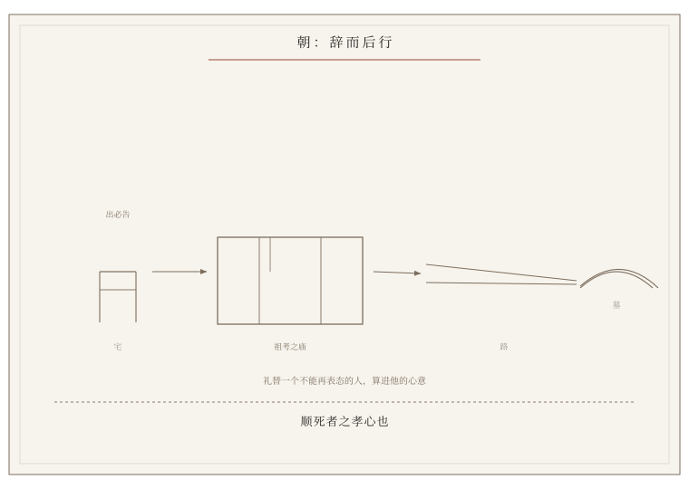

檀弓下 · 四·三十五 · 第 360 课
丧之朝也，顺死者之孝心也。其哀离其室也，故至于祖考之庙而后行。殷朝而殡于祖，周朝而遂葬。
说什么事：葬前把柩迁到祖庙，这叫「朝」。所以朝，是顺死者生前「出必告、反必面」的孝心。又设想死者的神灵哀于离其故居，故到祖考之庙辞别，而后上路。殷人是朝而后殡于祖庙，周人是朝毕即葬。
落在哪一层：以「心」量礼。论礼肯替一个不能再说话的人，把他的心意算进去。
为何编在此位：上节言「死之道」之难言，此节转言「孝心」之可顺。一难一顺，正是礼的两面。
【经】喪之朝也，順死者之孝心也。其哀離其室也，故至於祖考之廟而後行。殷朝而殯於祖，周朝而遂葬。
【注】朝謂遷柩於廟。
【疏】此一节论殷、周死者朝庙之事。「丧之朝也」者，谓将葬前，以柩朝庙者。夫为人子之礼，出必告，反必面，以尽孝子之情。今此所以车载柩而朝，是顺死者之孝心也。／「其哀离其室也」者，谓死者神灵悲哀，弃离其室，故至于祖考之庙，辞而后行。／殷人尚质，敬鬼神而远之，死则为神，故云朝而殡于祖庙。周则尚文，亲虽亡殁，故犹若存在，不忍便以神事之，故殡于路寝，及朝庙遂葬。夫子不论二代得失，皆合当代之礼，无所是非。／以此言之，则周人不殡于庙。按僖八年「致哀姜」，《左传》云：「不殡于庙，则弗致也。」服氏云「不殡于庙，庙谓殡宫」；郑康成以为《春秋》变周之文，从殷之质，故殡于庙；杜预以为不以殡朝庙，未详孰是。
朝 注「迁柩于庙」。非朝见之朝，是「朝祖」之朝。
顺 顺着他的心意做，不是替他做主。
孝心 生前事亲之心。「出必告，反必面」是其常。
哀离其室 设想死者之神哀于离其故居。
祖考之庙 祖与父之庙。疏云「每庙皆朝」。
而后行 辞别而后上路，往墓。
殡于祖 殡在祖庙。殷礼。
遂葬 朝毕即葬，不再殡于庙。周礼。
葬前迁柩于祖庙，这叫「朝」，是顺着死者的孝心。又设想他哀于离开自己的家，所以先到祖考之庙辞别，然后才上路。殷人是朝而后殡于祖庙，周人是朝毕即葬。
此章解释一件看似奇怪的仪：为什么人已死，还要抬着棺材去祖庙走一趟。
答曰：因为他活着的时候，出门是要说的。
礼在这里做了一件极不寻常的事：它把一个不能再表态的人，当作还有心意的人来对待。
第一层 出必告：一条家常礼，撑起一场大丧 疏以「出必告，反必面」为据。
此八字是《曲礼》所记的日常：儿子出门说一声，回来见一面。极琐细，几乎不值一提。
而礼把这场「迁柩朝庙」的全部意义，挂在这样一条家常礼上。大礼的根，常在小礼。
第二层 顺：不替他做主 「顺」字要紧。
若只是「行礼如仪」，可曰「行」、可曰「举」；此处偏曰「顺」。
顺着他的孝心——即：不是我们觉得该朝，是他若还能做主，他也会这么走。
礼的最高一层，不是替人安排，是替人完成他本来要做的事。
第三层 其哀离其室：礼替死者设一处心情 疏云「死者神灵悲哀，弃离其室」。
此语在礼书中不多见：礼竟肯为死者写一句内心。虽出于推想，其心可感。
而此推想的用处很实在：它把「朝庙」从一道过场，变成一次告别。若无此一句，朝庙只是程序；有此一句，朝庙是一次回头。
第四层 殷质周文：同一条路的两种走法 殷人尚质，死即为神，故朝而殡于祖；周人尚文，「亲虽亡殁，犹若存在，不忍便以神事之」，故殡于路寝，朝毕遂葬。
同一条路，殷人走得快，周人走得慢；殷人把死者及早当神，周人尽量多留他一会儿在「人」的位置上。
孔子「不论二代得失，皆合当代之礼，无所是非」——此态度亦是一课：评礼可评，行则各从其世。
第五层 今日之用：出门前的那一趟 今人迁居、出国、远行，常有「回去看一眼老屋」的举动；丧事中亦有「绕宅一周」「经过旧居」。
这些多半被当作习俗，其实正是「朝」的古意：走之前，先向自己所属的地方辞一次。
若省去这一趟，人往往在很久之后才忽然觉得「没有告别」。
与今日何干 凡有大别离，不妨添一趟「朝」：到那个地方去一次，不必说话。礼之大者，常由这种小事撑住。
| 左 | 右 |
|---|---|
| 朝 | 迁柩于庙 |
| 顺 | 顺其孝心 |
| 出必告 | 生时之常礼 |
| 反必面 | 归而见面 |
| 哀离其室 | 礼为死者设一心情 |
| 祖考之庙 | 每庙皆朝 |
| 而后行 | 辞而后往墓 |
| 殷 | 朝而殡于祖 |
| 周 | 朝而遂葬 |
画一处宅院与一座祖庙的并列，视点略高。画面左侧为宅，只画一道门与半截院墙；画面中为祖庙，画三开间的简单轮廓，中间一间敞着门；画面右侧为一条向远处渐细的路，路的尽头画一小丘。宅与庙之间、庙与路之间，各画一条折线箭头，示迁柩之序。不画人物，不画棺。赭色只用在祖庙中门的一道门框。
